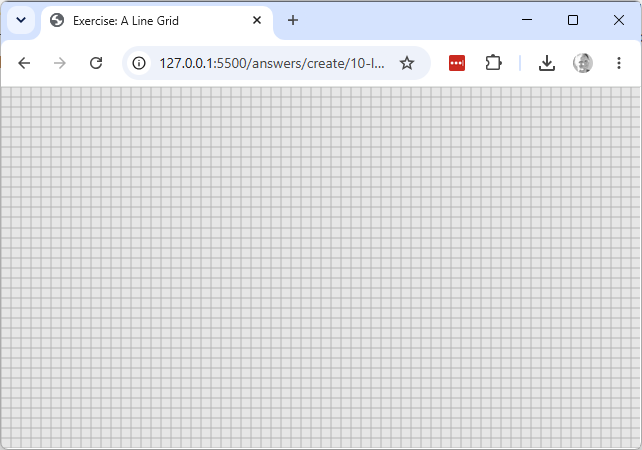
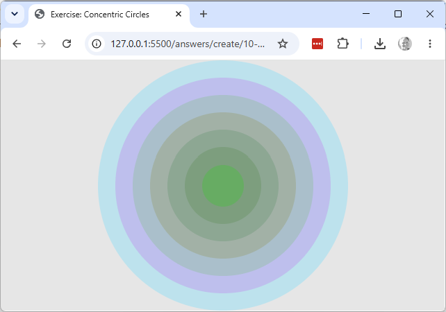
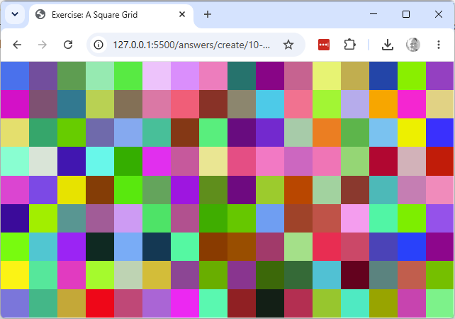

Explore & create
These don't modify the sketch above — each is a brand-new sketch, built from a blank starter,
purely for more practice writing for loops: one that doesn't count an array's indices at all,
and one nested inside another.
- A line grid. Working copy:
exercises/create/10-line-grid/. Draw a series of horizontal lines, 10 pixels apart, down the whole canvas, and a series of vertical lines, 10 pixels apart, across the whole canvas — like a sheet of graph paper. Use oneforloop for the horizontal lines and a second for the vertical lines.

- Concentric circles. Working copy:
exercises/create/10-concentric-circles/. Draw a series of circles, all centred on the middle of the canvas, each a random colour at 75% transparency (an alpha of about 64), with a diminishing radius: start atheight / 2and decrease by 25 each time round the loop, stopping once the radius would drop below 25. Use awhileloop for this one, not aforloop — declare a variable holding the radius before the loop starts, check it against 25 as the loop's condition, and decrease it by 25 as the last line inside the loop's block (the samefor/whilecorrespondence from earlier in this sketch). Here the loop's counter is the radius itself, not an index counting0, 1, 2, ....

- A square grid. Working copy:
exercises/create/10-square-grid/. Draw a grid of randomly coloured squares that tiles the whole canvas, using aforloop nested inside anotherforloop — the outer loop for rows, the inner loop for columns.
